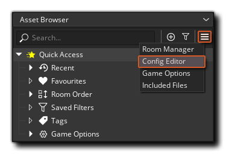
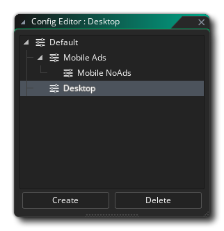
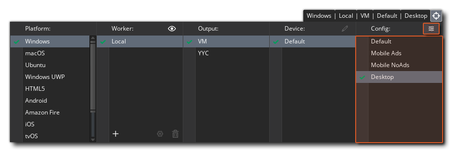

Due to the demands of cross platform development and the need for one product to be available and customised for different clients or devices or platforms, GameMaker Studio 2 includes configurations to make things simpler. Using this system, you can quickly switch between different splash screens, icons and included files and test or export only those that are relevant to the target platform or client at any time, all from the same base code.
To be able to deal with the different demands from clients and platforms you can use the Configuration Editor which is accessible from the Extras menu on the Asset Browser: 
All games made in GameMaker Studio 2 start with a
"default" configuration, which is listed in the editor when you
first open it: 
To set up your configurations it is recommended that you first prepare this "default" config by incorporating all the configurable assets for the project into it. To do this, simply go through the following list of options and set them to what is required by default:
- Extension
Options: Set the various "Copy to..." fields to the required
platforms for the configuration. Any "Proxy" files created here
will have their "Target" platform linked to the configuration
too.
- Sprite
Editor: Set the texture group that you want the sprites to be
added to.
- Tileset
Editor: Set the texture group that you want the tilesets to be
added to.
- Font
Editor: Set the texture group that you want the fonts to be
added to.
- Texture Group Manager: Here you can
set any of the properties on a per-configuration bases, including
the parent group that a texture group belongs to.
- Audio Group Manager: The sounds that
are assigned to the different audio groups is confiugurable
here..
- Included Files: Set the "Copy to..." field to the required platforms for the configuration.
Once you have set up the default configuration, you can then add a
new one to the Configuration Editor by right clicking  on the
configurations folder and selecting Add Config, or by
clicking the "Create" button at the bottom of the window. The new
configuration will be shown as a "child" of the default config -
all user defined configurations are children of the default
- and you can give it an appropriate name.
on the
configurations folder and selecting Add Config, or by
clicking the "Create" button at the bottom of the window. The new
configuration will be shown as a "child" of the default config -
all user defined configurations are children of the default
- and you can give it an appropriate name.
To edit the config, you must either double click  on it or
use the right mouse button
on it or
use the right mouse button  menu option "Set Config", which will
select the configuration in the editor and once that has been done,
you can go ahead and customise it. This is done by simply going
through the options listed above and changing them to the desired
settings for the newly created configuration. GameMaker Studio
2 will store these values automatically for the config, and you
can change between configs at any time by simply using the RMB
menu option "Set Config", which will
select the configuration in the editor and once that has been done,
you can go ahead and customise it. This is done by simply going
through the options listed above and changing them to the desired
settings for the newly created configuration. GameMaker Studio
2 will store these values automatically for the config, and you
can change between configs at any time by simply using the RMB
 menu option or double clicking
menu option or double clicking  .
.
Further configurations can be added as either children of the default configuration, or children of the user defined configurations that you've created, depending on which configuration has been highlighted in the editor when you created it. In the example image below, you can see we have three custom configs defined, two of which are children of the default config, and another that is the child of a user defined config: 
It is worth noting that you can use any given configuration with any given target platform when compiling or testing your projects. This is done by selecting the config you require from within the Targets Window of the Target Manager: 
You can also open the Configuration Editor at any tme from the Target Manager by clicking the button at the top right (as shown in the image above).
Once you have set a configuration to be used in this way, any time you compile to a target, either for testing or to create a final asset package, the chosen configuration will be used. For more information on the Targets Window, please see the section on Compiling.